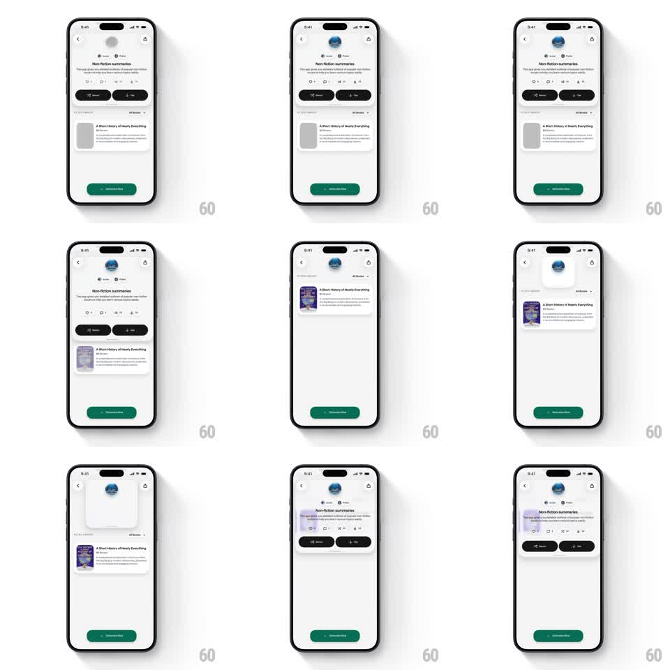

Media
Frame-by-frame

Rebuild this interaction 1:1: Wabi's app detail collapse - scrolling the detail page morphs the large circular app icon header into a compact circle pinned at the top, freeing the list (A Short History of Nearly Everything) to fill the viewport.

Rebuild this interaction 1:1: Wabi's app detail collapse - scrolling the detail page morphs the large circular app icon header into a compact circle pinned at the top, freeing the list (A Short History of Nearly Everything) to fill the viewport. ## Integration Integration: stack-agnostic spec - springs given as stiffness/damping, timed motions as duration + curve; map every value to your framework and animation library of choice. ## Scene Light detail page: back chevron, big circular app icon, "Non-fiction summaries" title, stats chips, Remix / Save buttons, a tab row, and the content list (book rows with covers) over a green "Generate Now" bottom button. Collapsed state: the icon is a small circle centered in the top bar; title and meta are gone; the list occupies the freed space. ## Motion spec Pattern: scroll-linked header morph, gesture-driven. - Scroll: from offset 0 to ~120px the icon shrinks (100% -> 36px) and drifts to the top-center while the title, stats, and buttons fade + collapse (all tied 1:1 to scroll position). - Pin: past the threshold the compact icon snaps into the nav bar (spring ~320/22) with a hairline divider fading in. - Reverse: scrolling back to top reverses every step at the same 1:1 rate - the header blooms back. - Overshoot: a fast fling past the threshold gives the compact icon a 4px dip-and-settle (spring ~300/18). ## Calibration - The morph is interpolable at every scroll offset - half-scrolled shows a half-shrunk icon. - "Generate Now" never moves; only the header region transforms. ## Reduced motion Header swaps between expanded and compact with a 200ms fade at the threshold. ## Don't miss - The icon is the only element that survives the collapse - everything else dissolves. - The compact icon lands exactly in the nav bar's center, not beside the chevron.